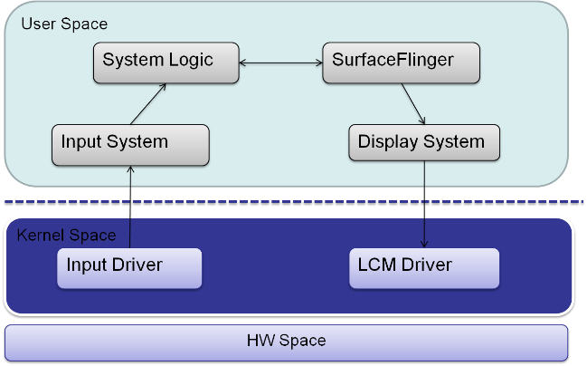

1. 系统简图
当用户对手机进行操作时, 对应的数据流将是下面一个概括的流程图.

* HW 如传感器, 触摸屏(TP), 物理按键(KP)等感知到用户操作后，触发相关的中断(ISR) 传递给Kernel, Kernel 相关的driver 对这些ISR 进行处理后，转化成标准的InputEvent.
* User Space 的System Server 中的Input System 则持续监听Kernel 传递上来的原始InputEvent, 对其进行进一步的处理后, 变成上层APP 可直接处理的Input Event, 如button 点击, 长按, 滑动等等.
* APP 对相关的事件进行处理后，请求更新相关的逻辑界面，而这个则由System Server 中的WMS 等来负责.
* 相关的逻辑界面更新后(Z-Window), 则会请求SurfaceFlinger 来产生FrameBuffer 数据, SurfaceFlinger 则会利用GPU 等来计算生成.
* Display System/Driver 则会将FrameBuffer 中的数据更新显示出来, 这样用户才能感知到他的操作行为.
2. 可能死机的原因
原则上上面流程中，每一步出现问题，都可能引发死机问题. 大的方面将，可以分成硬件HW 和 软件SW 两个层次, 硬件HW 不在我们的讲诉之内.
软件SW 上，死机的原因可以分成两种:
(1). 逻辑行为异常
** 逻辑判断错误
** 逻辑设计错误
(2). 逻辑卡顿(block)
* 死循环 (Deadloop)
* 死锁 (Deadlock)
从具体的原因上将，可以进一步分成:
(1). Input Driver
* 无法接收HW 的中ISR，产生原始的InputEvent, 或者产生的InputEvent 异常.
(2). Input System
* 无法监听Kernel 传递上来的原始InputEvent, 或者转换与传递异常.
(3). System Logic
* 无法正常响应Input System 传递过来的InputEvent, 或者响应出错.
(4). WMS/Surfaceflinger 行为异常
* WMS/SF 无法正确的对Z-Window 进行叠加转换
(5). Display System
* 无法更新Framebuffer 数据，或者填充的数据错误
(6). LCM Driver
* 无法将Framebuffer 数据显示在LCM 上
对应硬件HW hang, 经常见得的情况有:
* Power
* Clock
* Memory & Memory Controller
* Fail IC